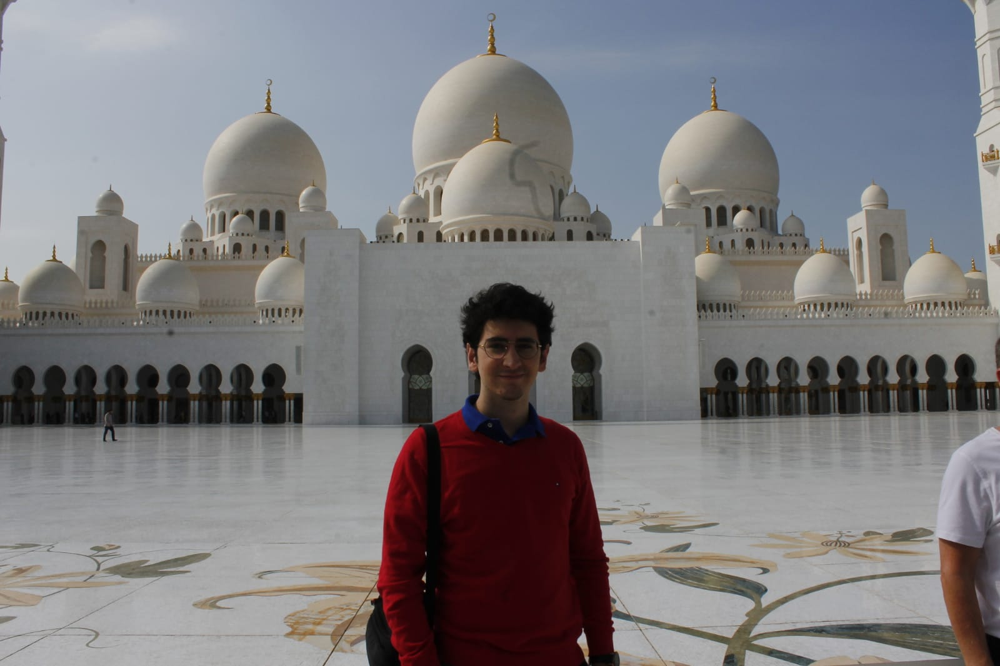

Who doesn't like to travel? Well, in my case I am very fortunate as I started
traveling with my family very soon. We usually made day trips or take small
vacations in different parts of Spain. I have very good memories about those
trips. Even more, at the age of 10, my mother-part family started making
cruise vacations and, fortunately, I was able to go with them.
We went through a great part of the Mediterranean sea, we went through the
Norwegian fjord, the Baltic sea and the Atlantic sea. Until 2017 we visited
almost every place in a cruise ship. However, despite the privilege that it
was, you could only visit certain parts of the city. You could not appreciate
the totality of the places, getting with a small picture of some gorgeous cities
and places.
In 2017 I made my last travel with my family. We went to Thailand and my mother
organized every aspect of the vacations. It was an unforgettable experience.
We stayed for two weeks and visited Bangkok, the island of Phuket and Chiang Mai.
Last time I went out of Spain was in 2018, where I went to visit a friend in
Abu Dhabi in Arabia Saudi, where I stayed for a week and a half during Christmas.
It was the first time I traveled abroad alone, and I loved it.
Now, due to the pandemic and lack of time I haven't been able to travel as much as
I would like. However, I am looking forward to visiting and staying more time in
new places and discover its culture, gastronomy and history (and making a travel journal).
